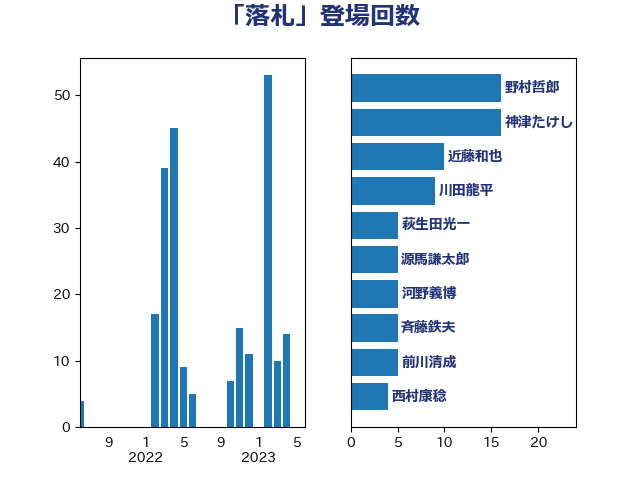

単語「落札」

| 野村哲郎 | 自由民主党 | 16 回 |
| 神津たけし | 立憲民主党 | 16 回 |
| 近藤和也 | 立憲民主党 | 10 回 |
| 川田龍平 | 立憲民主党 | 9 回 |
| 萩生田光一 | 自由民主党 | 5 回 |
| 源馬謙太郎 | 立憲民主党 | 5 回 |
| 河野義博 | 公明党 | 5 回 |
| 斉藤鉄夫 | 公明党 | 5 回 |
| 前川清成 | 日本維新の会 | 5 回 |
| 西村康稔 | 自由民主党 | 4 回 |
| 芳賀道也 | 国民民主党 | 4 回 |
| 佐々木紀 | 自由民主党 | 4 回 |
| 井坂信彦 | 立憲民主党 | 4 回 |
| 足立敏之 | 自由民主党 | 3 回 |
| 舟山康江 | 国民民主党 | 3 回 |
| 田中健 | 国民民主党 | 3 回 |
| 牧島かれん | 自由民主党 | 3 回 |
| 吉川元 | 立憲民主党 | 3 回 |
| 道下大樹 | 立憲民主党 | 2 回 |
| 谷田川元 | 立憲民主党 | 2 回 |
| 秋本真利 | 自由民主党 | 2 回 |
| 福島伸享 | 無所属 | 2 回 |
| 柳ヶ瀬裕文 | 日本維新の会 | 2 回 |
| 柚木道義 | 立憲民主党 | 2 回 |
| 松本剛明 | 自由民主党 | 2 回 |
| 岡本三成 | 公明党 | 2 回 |
| 伊藤孝恵 | 国民民主党 | 2 回 |
| 井林辰憲 | 自由民主党 | 2 回 |
| 中西祐介 | 自由民主党 | 2 回 |
| 高見康裕 | 自由民主党 | 1 回 |
| 音喜多駿 | 日本維新の会 | 1 回 |
| 長浜博行 | 無所属 | 1 回 |
| 長友慎治 | 国民民主党 | 1 回 |
| 鈴木俊一 | 自由民主党 | 1 回 |
| 野田国義 | 立憲民主党 | 1 回 |
| 西銘恒三郎 | 自由民主党 | 1 回 |
| 緒方林太郎 | 無所属 | 1 回 |
| 石垣のりこ | 立憲民主党 | 1 回 |
| 田村貴昭 | 日本共産党 | 1 回 |
| 湯原俊二 | 立憲民主党 | 1 回 |
| 沢田良 | 日本維新の会 | 1 回 |
| 林芳正 | 自由民主党 | 1 回 |
| 新垣邦男 | 立憲民主党 | 1 回 |
| 徳永エリ | 立憲民主党 | 1 回 |
| 岡田直樹 | 自由民主党 | 1 回 |
| 山崎正恭 | 公明党 | 1 回 |
| 小野泰輔 | 日本維新の会 | 1 回 |
| 大西健介 | 立憲民主党 | 1 回 |
| 大島敦 | 立憲民主党 | 1 回 |
| 大串博志 | 立憲民主党 | 1 回 |
| 塩川鉄也 | 日本共産党 | 1 回 |
| 城井崇 | 立憲民主党 | 1 回 |
| 倉林明子 | 日本共産党 | 1 回 |
| 伊藤岳 | 日本共産党 | 1 回 |
| 仁木博文 | 無所属 | 1 回 |
| 中司宏 | 日本維新の会 | 1 回 |